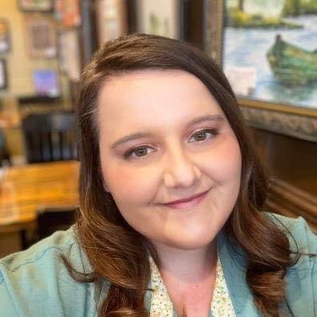

Hello! I am Ms. Lauren Shoemaker. I am in my 5th year of teaching. I believe that the library should be a hub for information of all kinds from mathematical theory to the best kind of dog breed any student, academic or with simple curiosity, should be able to come into the library and not only find what they are looking for but be able to use it in their own lives somehow. My favorite genre to read is fantasy and I also love a good geography atlas. Don't forget to ask me about our new books that have come into the collection. I can't wait to see you soon!
I believe that learning is more than just spouting out facts or being able to do surface level research. Learning should cultivate curiosity, analytiicla thinking, and an appreciation for the complexity of life. In my classroom, I encourge students to think of themselves as scientists. Learning is driven by real world quesitoning, investigation, and evenidence-based reasoning. I have a love for teaching and art of investigation and research and in a world where anything can be invented with the click if an AI button, I think these tools are more valuable than they were 5 years ago when I started teaching. Students are encouraged to ask quesitons, form hypothesis, and think critically about the evidence they collect and encounter.